Open to professional opportunities
Eka Aderia
Marketing Management • Business Development • Digital Marketing
Eka Aderia
Ningrum
An action-oriented Management student with hands-on experience in strategic partnerships, e-commerce, stakeholder relations, event management, and revenue-driving digital initiatives.
Growth-driven mindset
Marketing × Business
Institutional revenue
IDR 40M+
generated in one week
Current GPA
3.82/4.00
01
Professional Profile
Business-minded, people-focused, and built for execution.
I am a Management student at Universitas Ahmad Dahlan who enjoys turning ideas into structured projects, partnerships, and measurable outcomes.
My experience spans B2B collaboration, marketplace operations, financial planning, organizational leadership, digital content, sponsorship acquisition, and cross-functional coordination. I am comfortable moving between strategy and hands-on execution—whether negotiating with external stakeholders, managing an event, optimizing digital sales, or coordinating a team.
Business DevelopmentStrategic PartnershipsDigital
MarketingProject ManagementStakeholder Relations
“Work hard in silence, stay kind in the open.”
02
Experience
Where strategy became measurable results.
Selected work experience and organizational leadership with a focus on commercial impact, operations, and collaboration.
GS
Internship
Aug–Sep 2025
Gramedia Sudirman Yogyakarta
Store Department Associate Intern — Marketplace
- Managed daily e-commerce and marketplace operations, including product listings, digital transactions, and order fulfillment.
- Hosted Shopee Live sessions generating IDR 1–2M sales/hour, accelerating to IDR 3–4M/hour during double-date mega sales.
- Monitored stock availability and coordinated with store departments to maintain operational efficiency.
- Handled customer inquiries and contributed to positive service delivery and online ratings.
4M/hr peak live salesE-commerce
operationsCustomer experience
LP
Leadership
2023–2026
LPM Poros UAD
Head of Enterprise Division
- Coordinated B2B partnerships with 16 national publishers for the Book Bazaar, contributing IDR 40M+ in institutional revenue within one week.
- Managed photobooth activations generating over IDR 2M.
- Designed a 1-month internship curriculum in corporate lobbying and copywriting, helping secure advertising partnerships with 15 local businesses.
- Oversaw merchandise, business sales, financial budgeting, sponsorship structures, and multimedia commercial initiatives.
HM
Project Management
2024–2025
HMPS Manajemen UAD
Organizing Committee & Project Specialist
- Managed end-to-end project execution for Management Festival 2024 with 35+ corporate sponsors and media partners.
- Coordinated the Closing Ceremony concert, including logistics and hospitality for national and local guest stars.
- Co-organized the National KBMK Seminar, “Share to Care” charity drives, community outreach, Management Competition 2024 se-DIY, and National Seminar on Financial Literacy.
03
Projects & Publications
Commercial thinking meets media and creativity.
Projects that demonstrate monetization, editorial work, reporting, and intellectual property development.
Media Publication • 2026
LPM Poros Internship Bulletin — Edition II
Sponsorship Acquisition & Editor
Directed the monetization strategy, secured corporate sponsorships, and oversaw final editorial design and content placement.
Journalism • Published
“Tak Peroleh Hak Relokasi, Paguyuban SKMB Gaet Bantuan ke LBH Yogyakarta”
Reporter & Writer • LPM Poros
Produced a field-based news article through reporting, stakeholder communication, and structured journalistic writing.
Media Publication • 2023
LPM Poros Internship Bulletin — Edition I
Reporter & Writer
Conducted field reporting, interviews, and news drafting for the primary layout of the organizational bulletin.
Creative Project & HKI • 2023
Managing The External Environment And Organizational
Project Creator
Directed the conceptual framework and production of an educational management video officially registered under Indonesia’s Intellectual Property Rights framework (HKI).
04
Core Capabilities
Skills built through real projects, not just theory.
A balanced combination of marketing execution, operational capability, leadership, and professional communication.
Marketing & Commerce
E-commerce & Marketplace OperationsShopee & TikTok
ShopLive Streaming SalesDigital MarketingContent
StrategyEmail Marketing / Mailchimp
Business & Partnership
B2B Relationship ManagementCorporate
LobbyingStakeholder EngagementSponsorship AcquisitionBudgeting &
Financial PlanningBusiness Development
Communication & Media
Public SpeakingPersuasive
CommunicationCopywritingBasic Graphic Design / CanvaNews
WritingMedia Relations
Leadership & Execution
Project ManagementEvent ManagementCross-functional
CoordinationProblem SolvingAdaptabilityOperational
Governance
05
Verified Credentials
Certificates & Official Recognitions.
13 official certificates validating corporate internships, event leadership, journalism training, national financial seminars, and soft skills development.
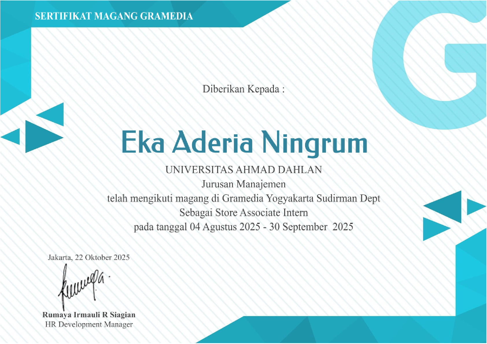
Internship
Store Associate Intern
Sertifikat Magang Gramedia Yogyakarta
PT Gramedia Asri Media
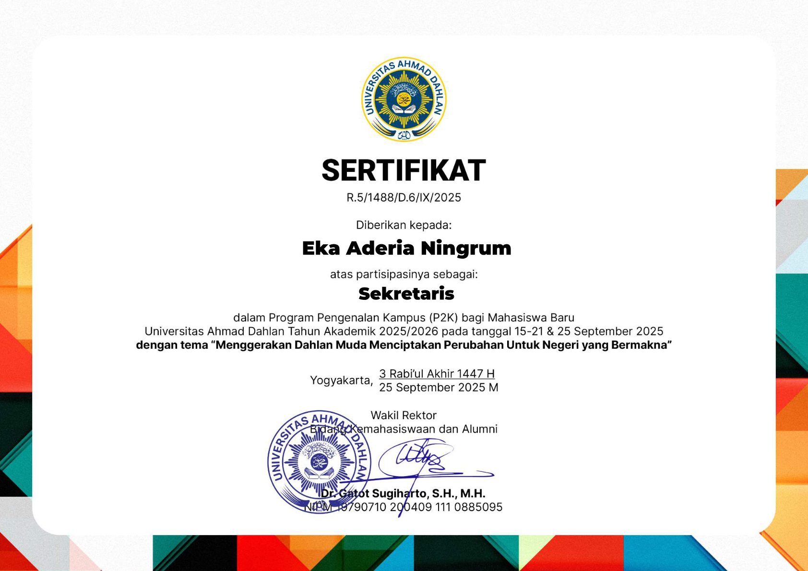
Leadership
Sekretaris
Sekretaris Panitia P2K UAD 2025
Universitas Ahmad Dahlan
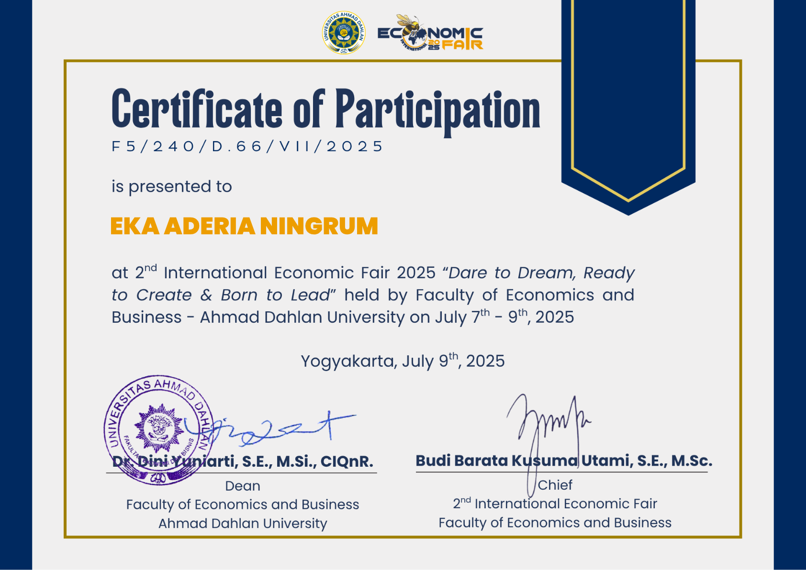
Academic
Participant
2nd International Economic Fair 2025
FEB Universitas Ahmad Dahlan
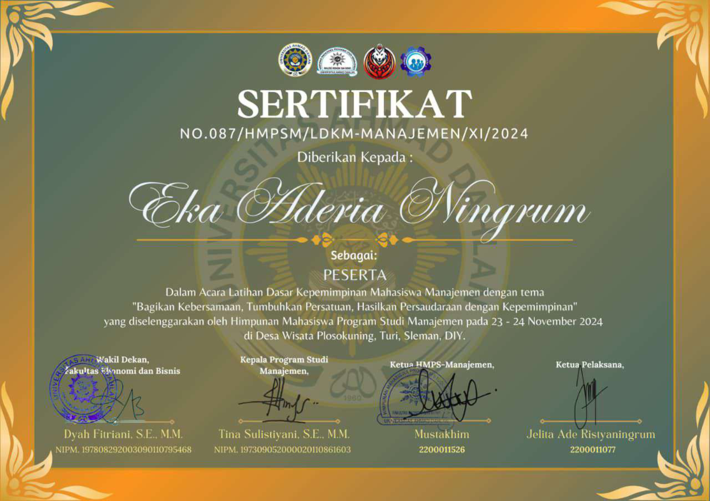
Leadership
Peserta
LDKM Mahasiswa Manajemen 2024
HMPS Manajemen UAD
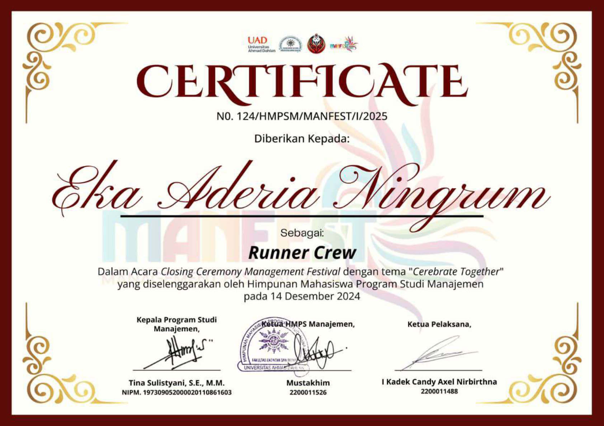
Event
Runner Crew
Closing Ceremony Management Festival
HMPS Manajemen UAD
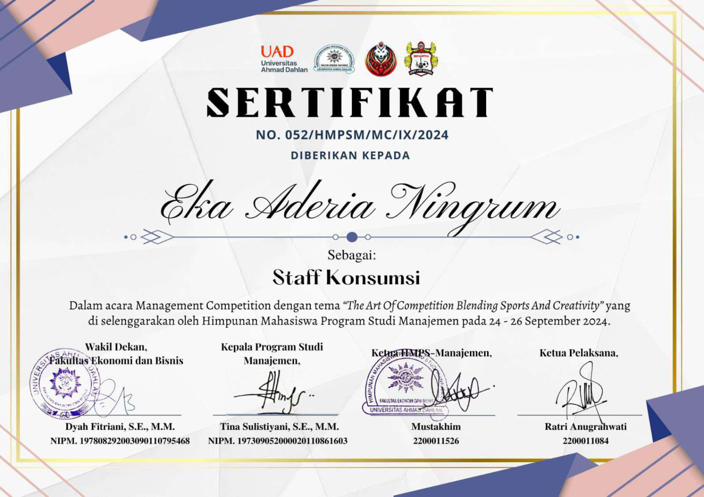
Event
Staff Konsumsi
Management Competition 2024
HMPS Manajemen UAD
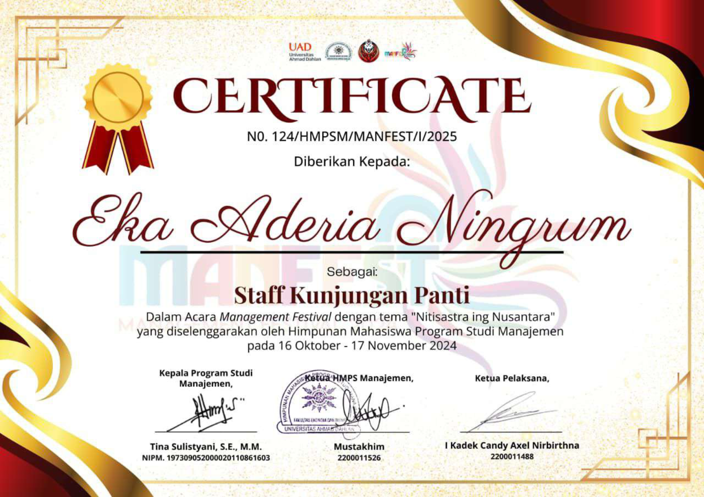
Social Service
Staff Kunjungan
Kunjungan Panti ManFest 2024
HMPS Manajemen UAD
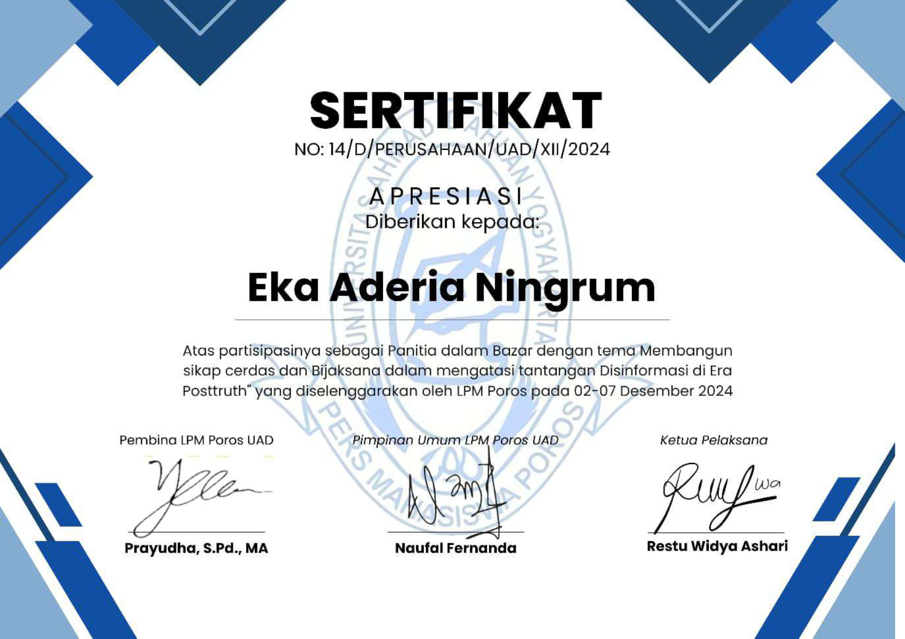
Journalism
Panitia
Bazar LPM Poros: Disinformasi Posttruth
LPM Poros UAD
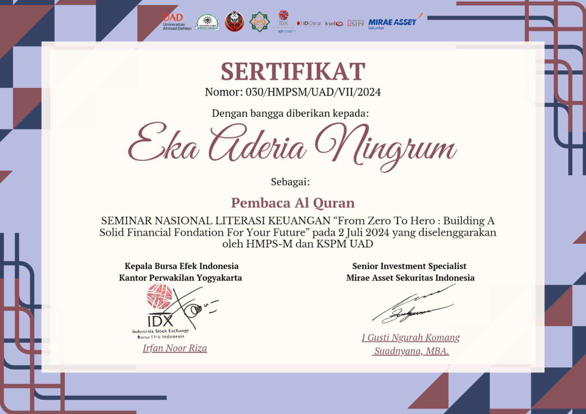
Finance
Pembaca Al-Qur'an
Seminar Nasional Literasi Keuangan
HMPS-M & KSPM UAD
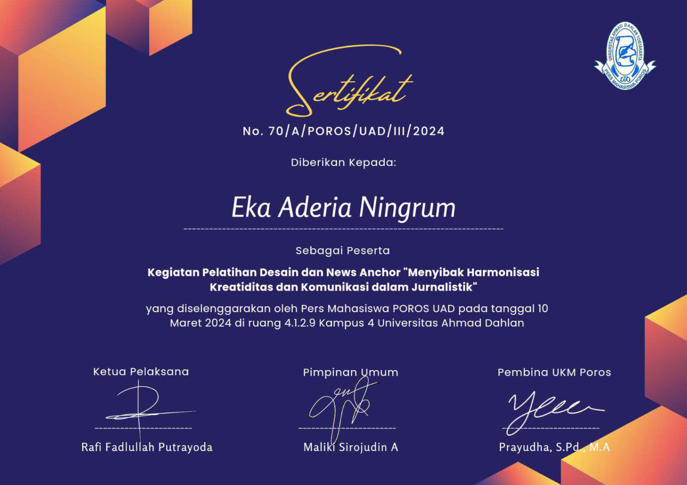
Journalism
Peserta
Pelatihan Desain & News Anchor 2024
Pers Mahasiswa POROS UAD
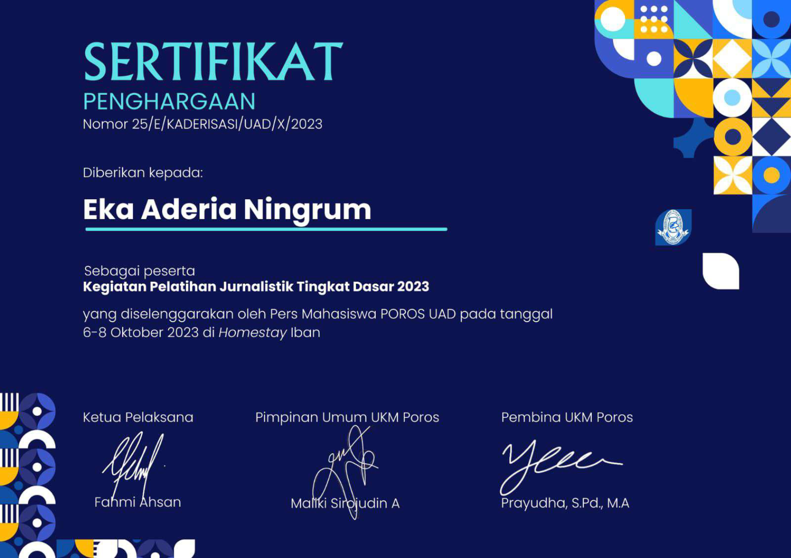
Journalism
Peserta
Pelatihan Jurnalistik Tingkat Dasar 2023
Pers Mahasiswa POROS UAD
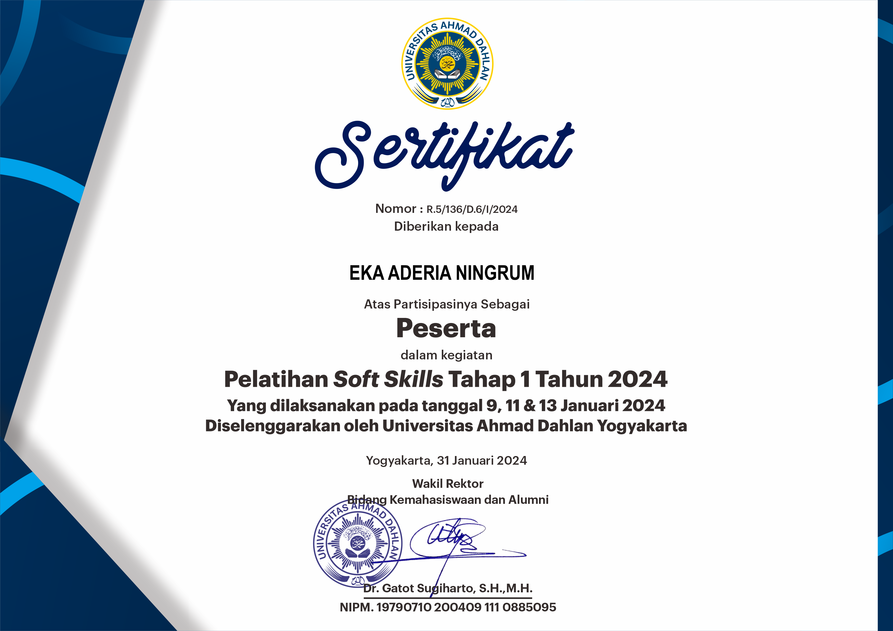
Soft Skills
Peserta
Pelatihan Soft Skills Tahap 1 (2024)
Universitas Ahmad Dahlan
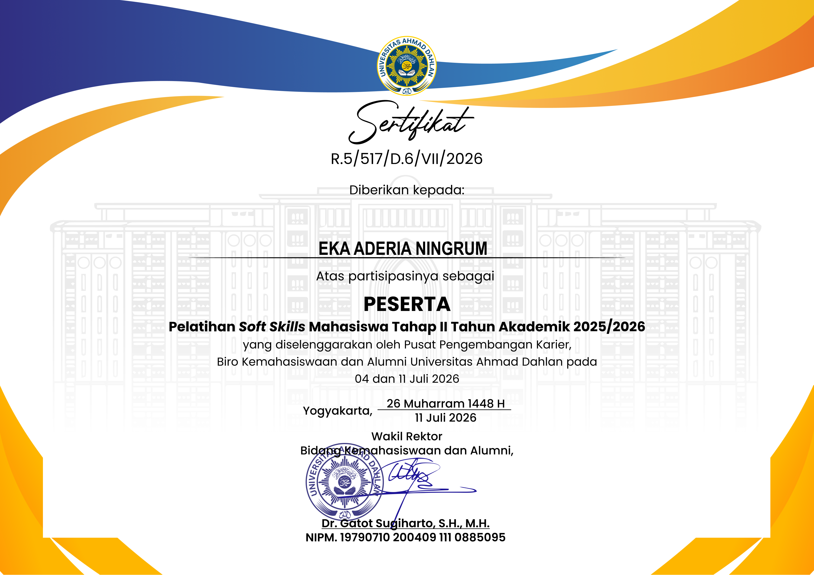
Soft Skills
Peserta
Pelatihan Soft Skills Tahap 2 (2026)
Bimawa & UAD Career Center
06
Learning Journey
Education, training, seminars, and continuous growth.
Designed as an expandable timeline so recruiters can scan the essentials quickly and open details when needed.
Education
Universitas Ahmad Dahlan
Bachelor of Management — Faculty of Economics and Business
December 2025
Professional Skills Series — Sponsorship Proposal & Corporate Lobbying
LPM Poros
December 2025
Advertorial & Copywriting Training
LPM Poros
December 2025
Advanced Journalism Training
Feature Writing, Investigative Reporting, Reporting on Sexual Violence, Social Analysis, and Critical Discourse • LPM Poros
June 2025
Mini Course in Digital Marketing
RevoU — digital marketing landscape, organic vs. paid channels, CRM/email marketing using Mailchimp, CV optimization, and elevator pitch.
May 2025
Book Printing & Publishing Operations
Percetakan Buku Sunrise
February 2025
Photography & Straight News Writing Training
LPM Poros
January 5, 2026
“Kebetulan Aku Manusia” Book Review & Discussion
Universitas Ahmad Dahlan • LPM Poros
October 26, 2025
Book Talk with Tere Liye: “Cinta Antara Jakarta dan Kuala Lumpur”
Gramedia Sudirman Yogyakarta
September 23, 2025
“Agama dan Imajinasi” Book Review Forum
Gramedia Sudirman Yogyakarta
July 30, 2025
Seminar & Focus Group Discussion on the RUU KUHAP
Lembaga Bantuan Hukum (LBH) • Indies Heritage Hotel, Yogyakarta
June 29, 2025
Public Discussion: Resistance on the Philosophical Axis & “Gusur Lapak” Documentary Screening
Universitas Ahmad Dahlan
07
Let’s Connect
Looking for someone who can connect ideas, people, and execution?
I am interested in opportunities related to marketing, business development, partnerships, marketplace operations, project management, and brand communication.
Emailaderianingrume@gmail.com
WhatsApp+62 896
7600 7610
LinkedInlinkedin.com/in/ekaaderianingrum
LocationYogyakarta, Indonesia